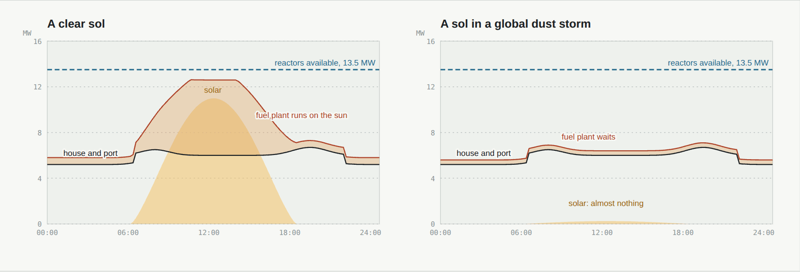

Energy
Why a settlement on Mars runs on fission: solar panels lose the Sun every night and, in a global dust storm, for weeks; wind barely turns a turbine in air this thin; a reactor does not care.
The optionsSun, wind and fission
Sunlight is 43% of Earth's above the air. Solar panels need dusting, give nothing in the night, and a global dust storm can cut them to a few percent for weeks: the 2018 storm ended the Opportunity rover.
Wind is weak: with air 1.6% as dense as Earth's, a turbine makes about a sixtieth of the power it would at home in the same wind.
Fission works day and night, in any storm. NASA and the US Department of Energy tested KRUSTY, a small space reactor, in 2018; NASA's Fission Surface Power project designed 40 kW reactors for the Moon and Mars, and in 2025 NASA set a goal of a 100 kW reactor on the Moon by about 2030. Curiosity and Perseverance already run on nuclear heat, from plutonium generators of about 110 W.
Heat matters as much as electricity on a cold planet, and a reactor's waste heat can warm a house.
In a stormNothing changes

Four 5 MWe fission microreactors, two on L4 and two at the spaceport, joined by a 30 km cable: 20 MWe, with no solar panels or mirrors on the ground. Power, in the design plan →
SourcesWhere the numbers come from
- NASA Goddard Space Flight Center, Mars Fact Sheet: sunlight and air density. The wind figure is our sum: a turbine's power goes with the air's density.
- NASA/JPL (2019): Opportunity's mission ends after the 2018 global dust storm.
- NASA and the US Department of Energy, the Kilopower / KRUSTY reactor test (2018); NASA's Fission Surface Power project; NASA (2025), plan for a 100 kW reactor on the Moon by about 2030.
- NASA/JPL: the multi-mission radioisotope thermoelectric generator of Curiosity and Perseverance.